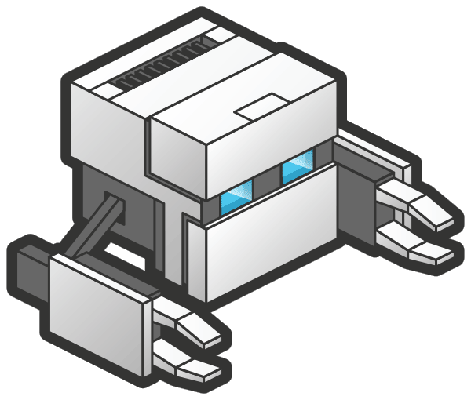

linux administrations service, bash scripts
MySQL, MongoDB, PostgreSQL, Redis, InfluxDB
a backend service or API using JSON / WebSockets.
Phoenix is a framework for Elixir, and used is for running distributed and fault-tolerant systems.
a backend API using JSON / WebSockets.
Ruby on Rails allows for rapid agile development and prototyping, and scales well for mobile and web users.
a backend service or JSON / WebSocket API.
NodeJS is fast, scalable and well suited for handling concurrent connections with asyncronous evented I/O.
a backend API using JSON / WebSockets.
Flask is a minimalist, highly portable and fast micro web framework for Python.
a backend API using JSON / WebSockets.
Slim is a PHP micro framework that helps you quickly write simple yet powerful web applications and APIs.
a responsive html5 & css3 mobile-first design
a static front end built with Jekyll
this site was built with Jekyll
a front end web application built using React.js.
an html5/css3/node cross-platform desktop app built with Electron.
Linux, OS X, Windows

Mobile Applicationan html5/css3/node cross-platform mobile app built with PhoneGap.
BlackBerry, Android, iOS, Windows Phone, Ubuntu & Firefox OS